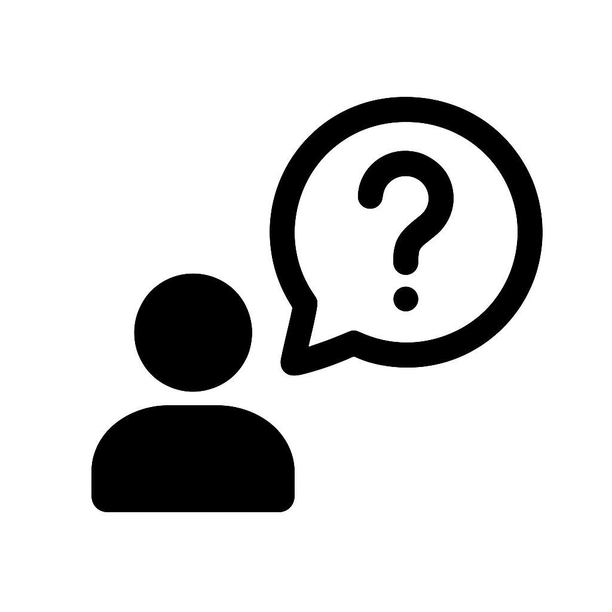
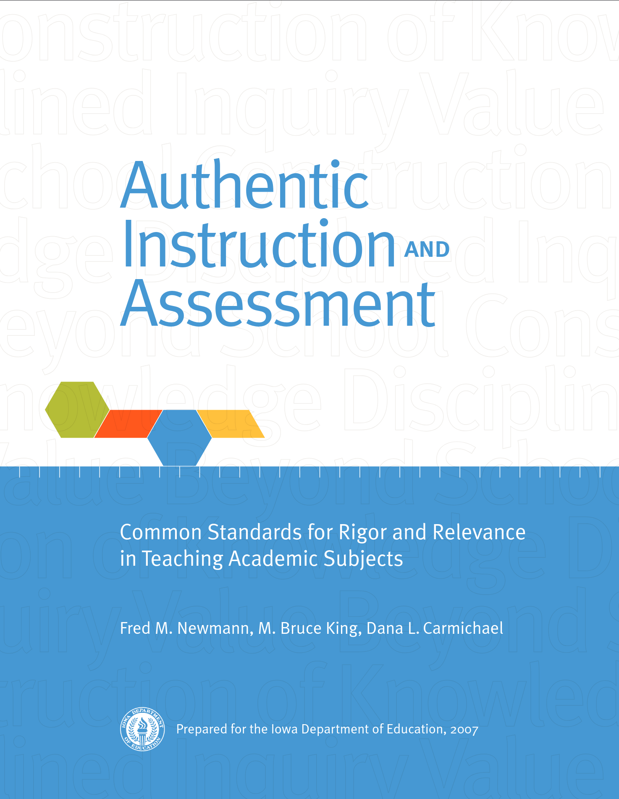
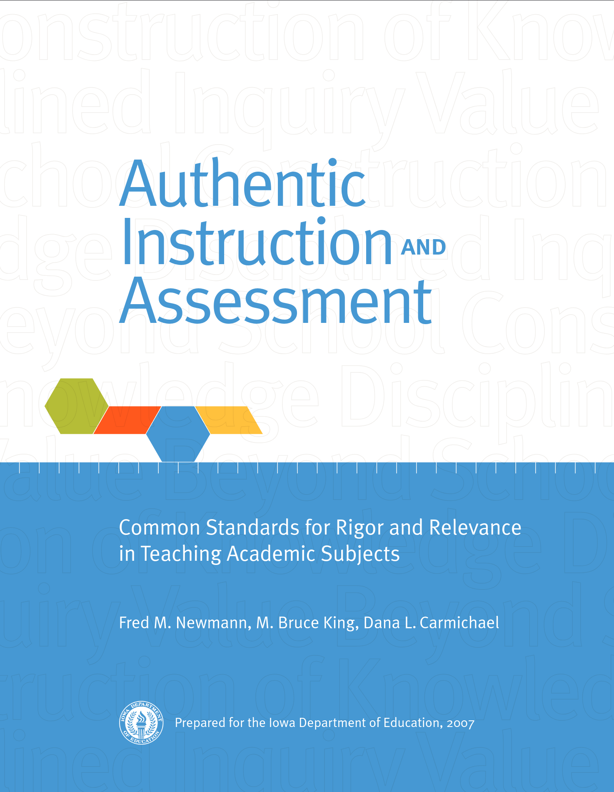
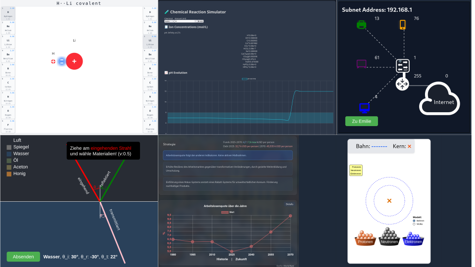
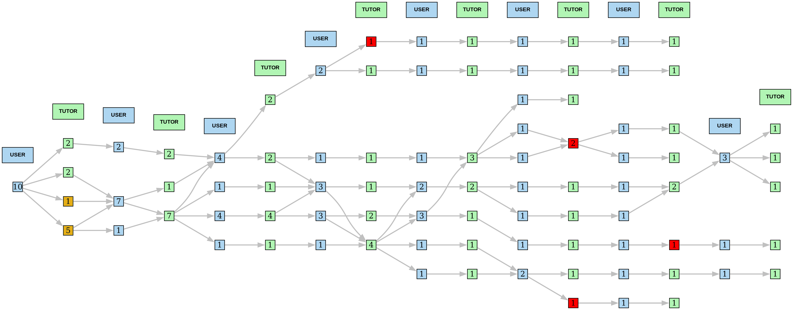

Designing Reliable AI Tutors for Secondary Education
Wolfgang Spahn, Josef Bucher, Marc Eyer
26.02.2026

2026 AI Reality

“In 2025, more than 2 in 5 people use artificial intelligence (AI) to create content, texts or images. This figure rises to 4 in 5 among 15–24 year olds.”
FSO: Dec 2025
“The vast majority of [USA] teachers (85%), students(86%), and parents(70%) report that they have used AI, with personal uses more common than work or school uses.”
CDT Report: 2025
Does it help?
Increased use of AI in the classroom is also bringing forth emerging questions, some of which are at the core of providing quality teaching and learning:
- How does the expanded use of AI affect relationships between students and teachers?
- How has AI impacted the job of a teacher?
- Does students’ use of AI diminish their critical thinking skills?
- What is the impact of students potentially using AI in ways that are not permitted?
Half of parents and students question whether teachers who use AI are doing their job!
Research
Research on the impact of AI in education is still emerging, with mixed findings:
- MIT:“Over four months, LLM users consistently underperformed [less cognitive load, less recall] at neural, linguistic, and behavioral levels. These results raise concerns about the long-term educational implications of LLM reliance and underscore the* need for deeper inquiry into AI’s role in learning.”
- Meta-Analysis: “[The study] indicates a large positive impact [large standardized mean difference] (g = 0.867) of ChatGPT on student learning performance. … [with] significant differences […] in the type of course, learning model, and duration. [For] higher-order thinking, it is crucial to provide corresponding learning scaffolds or educational frameworks*”
It seems ChatGPT can improve outputs while weakening internal cognitive construction at the same time !?
Educational AI
Chatbots are designed to reduce effort and provide answers. But we want to foster learning. Educational AI shall
- Be able to realize and to assure quality education AI dialogs in real time
- alignment with intended teaching behavior
- alignment with session goals and domain-specific content
- Be aware of and mitigate the risks of AI dialogues in education
- violation of pedagogical principles
- loss of tutor role and learning process control
- hallucinations and misinformation
- Know the target behavior of the AI tutor
- feedback and scaffolding aligned with learning goals
- embedding in authentic learning contexts
Specify and realize a specific AI tutor design with pedagogical principles enforced
Which Tutor Behavior?
With AI, we can pursue very different learning approaches.
| Assessing |
|
Checks knowledge step by step, gives hints, responds evaluatively |
| Solving |
|
Provides the complete solution and solution path in a single answer |
| Explaining |
|
Delivers a structured solution in steps, checks understanding |
| Socratic |
 |
Guides the learning path through leading questions toward a predefined sequence |
| Epistemic |
|
Gives feedback, hints, and structural support while leaving the solution path open |
AI should be able to support all of these teaching behaviors, but above all should pave the way toward epistemic tutoring, in order to sustainably develop real-world, higher-order thinking competencies.
AIDu AI Tutoring 1/5
To concretize our AI tutoring concept, the learning approach is based on “Common Standards for Rigor and Relevance in Teaching Academic Subjects” by Fred M. Newmann, M. Bruce King, and Dana L. Carmichael, and by John Bransford’s work on learning for understanding and transfer.
Together, they argue that“authentic intellectual work” needs tasks that:
- require the construction of knowledge (not merely recall),
- require investigation, analysis, synthesis, and/or evaluation — higher-order thinking, and
- support transfer beyond school, preparing learners for future learning and real-world use.
which can only be assessed and realized through tasks that provide opportunities for struggle and require learners to find their way through:
- Novel cases (not seen in instruction)
- Underspecified problems (no obvious procedure)
- Model conflict (two explanations that both partially fit)
- Representation mismatch (graph vs text vs phenomenon)
 

Real-World Learning
Only via “authentic” open ended learning situations, can learners develop and practice competencies.

AFS Flugagentur - Leipzig - Markranstädt - Flugsimulator - Airbus A320 - Professional
Technology can help here.
AIDu AI Tutoring 2/5
Combine AI Dialog with Authentic Learning Contexts (Microworlds)
- Student can freely explore the learning environment and receive feedback from the AI tutor on demand
- AI tutor provides feedback and scaffolding aligned with learning goals, but does not prescribe a specific solution path
- Embedding the AI dialogue in an interactive learning environment reduces the risk of hallucinations and role
Microworlds
- are carefully designed, self-contained learning environments
- where students explore, experiment, and construct knowledge
- by interacting with a simplified version of a real or abstract system.
Seymour Papert (theory of constructionism) — learners understand best when they actively build and manipulate meaningful artifacts.
Microworlds
Virtual learning environment allowing students to explore and experiment

AIDu AI Tutoring 3/5
be able to quality control and monitor AI dialogs
- For each dialogue turn, the system checks whether the AI tutor’s response is aligned
- with the intended teaching behavior,
- session goals and
- domain-specific content
- Using a grounding of the dialogue in prolog-based speech act analysis, the system can detect role violations, misinformation, or loss of tutor role.
AIDu AI Tutoring 4/5
be flexible to implement different AI behaviors and monitoring approaches
- The system architecture is designed to allow for different teaching behaviors (assessing, solving, explaining, Socratic, epistemic) to be implemented and switched between.
- Real-time monitoring of dialogue quality allows for detection (and correction) of issues such as role drift, misinformation, or misalignment with learning goals.
AIDu AI Tutoring 5/5
comply to EU AI Act - High-Risk AI:
recital (56) – AI systems used in education or vocational training, in particular
- for determining access or admission,
- for assigning persons to educational and vocational training institutions or programmes at all levels,
- for evaluating learning outcomes of persons,
- for assessing the appropriate level of education
- for an individual and materially influencing the level of education and training that individuals will receive or will be able to access or
- for monitoring and detecting prohibited behaviour of students during tests
should be classified as high-risk AI systems.
- https://eur-lex.europa.eu/eli/reg/2024/1689/oj
- https://www.isaca.org/-/media/files/isacadp/project/isaca/resources/white-papers/understanding-the-eu-ai-act_1024.pdf
Scaffolding Requirements
The different teaching behaviors place very different scaffolding requirements on AI.
| Assessing |
|
No scaffolding |
| Solving |
|
No scaffolding |
| Explaining |
|
Scaffolding for understanding |
| Socratic |
|
Scaffolding for problem solving |
| Epistemic |
|
Scaffolding for finding one’s way |
This is associated with very different requirements for AI in terms of role definition, monitoring, and quality assurance.
Jin Wang & Wenxiang Fan — The effect of ChatGPT on students’ learning performance, learning perception, and higher-order thinking: insights from a meta-analysis
Didactic Quality 1/2
To illustrate the importance of monitoring and quality control, we repeated a AI-Tutor, AI-Student dialogue 10 times with the same initial conditions and prompts.
Despite of identical initial conditions, the dialogue diverges over time. We see deviations from the intended epistemic tutoring behavior, wrong pre-suppositions already in the first turn.
“An oral exam is not about helping the student to gain understanding, but about checking whether the student has already gained understanding.”
Didactic Quality 2/2
By the end of the didactic dialogue, the chatbot’s responses diverge significantly.
- Warning (4%): Tutor works on wrong pre-supposition: Act as advisor (wrong) not examiner.
- Violation (3%): Tutor incorrectly evaluates answers or discloses the solution.
- 50% of the dialogs show disturbed instructional role fidelity.

Pilot Study 1/2
- 10 classes, Gymnasium Grades 1–2 (Computer Science)
- AI-based tutor: AIDu guides students through a learning task “How to get my printer working?” in an interactive learning environment.
- Tutor is prompted to provide epistemic support (hints, feedback, and structural guidance) while leaving the solution path open.
- Polling of students and teachers after the session to evaluate the quality of interaction and learning experience.
- Pre, post, and follow-up tests to assess learning outcomes and retention.
R. Langenegger. “Lernen durch KI: Eine Pilotstudie zum Einsatz eines ITS der PHBern im Informatikunterricht auf gymnasialer Stufe”. Abschlussarbeit, GymInformatik. MA thesis. PH-Bern, 2025
Pilot Study 2/2
Statistics
| Overall (n = 84) |
4.99 (5.72) |
11.80 (5.93) |
−8.24 (83) |
< .001 |
0.90 |
Knowledge increased significantly from pretest to posttest with a large effect. While gender difference present at pretest was no longer significant at posttest.
Interaction quality
Here we see a significant variability in the quality of interaction across dialogues => Symbolic supervision and monitoring is crucial in field systems.
- a wide range of interaction quality,
- with some dialogues showing consistent epistemic support,
- while others show significant deviations from the intended tutoring behavior, like acting as an ITC support.
J. Buchner, W. Spahn, and M. Eyer. “AIDu: Epistemisches KI Tutoring für ein selbstgesteuertes Lernen”. In: SGFB Jahreskonferenz. University of Zurich, Switzerland, 2026.
Conclusions
- Epistemic AI-tutoring is a viable design approach
- Embedding AI in authentic contexts is crucial
- Real-time monitoring is essential for quality control
- Design matters more than model capability alone
Next steps
- Refine AI tutor design based on pilot feedback
- Use live dialogue monitoring data to improve robustness and quality of pedagogical interactions
- Explore scalability and long-term impact in larger studies
_
- Thank you for your attention -
>/